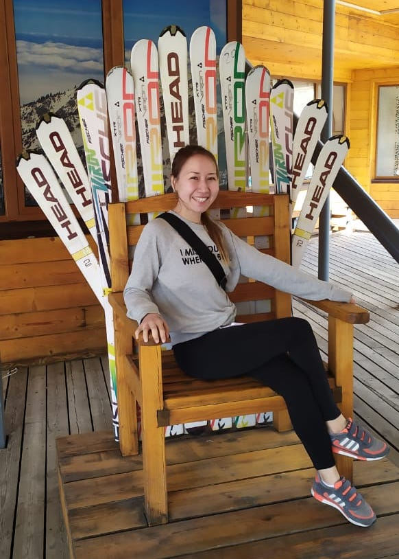
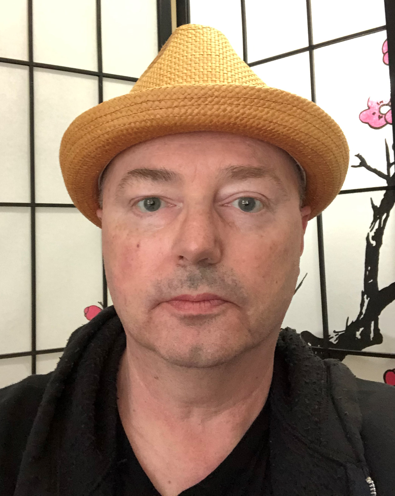

Damilya Kassymbekova
Student - Computer Science and IT
“Progress is made by lazy men looking for easier ways to do things.”
Looking for OPT.
Ex-fashion buyer managing ~100 brands per season.
Came to Seattle in 2017 to conquer America (in a peaceful way, unlike my ancestor Genghis Khan).
Determined, don't like wasting time, fun.
My LinkedIn

Nicholas Jimenez
Born in star district plumbus.
Works for the galactic concords embassy securing friendly relations with neghboring districts.
Always proud serving his solarverse doesn't take away from the small or trivial.
moments to grasp hold of.
Taking his snarks for space walks and enjoying brief
space currents drifts.
Nothing is trivial.
My LinkedIn

Thomas Mendenhall
Student - Programming
Inquisitive, curious, driven.
See pandemic for reason of unemployment.
Seeing to wildlife and the environment protected while advancing quality of life for human beings is my purpose.
I have lead teams up to 15 people and coordinated with multiple departments simultaneously.
Recently rescued several plants from a mealy bug infestation.
When I was 14 I won a ping pong championship on a cruise to Mexico.
My LinkedIn

Tim Davidson
Recently returned to school after an extended absence and was very relieved to find he still has working brain cells after all this time.
He has worked as an actor, waiter, manager and house manager at various times and often simultaneously.
Tim is also an ordained minister and has performed several wedding ceremonies over the last fifteen years, only one of which ended in divorcee.
He enjoys learning more about computers and their many languages and hopes to make this a new career.
When he was 14, Tim was in the National Spelling Bee in Washington, D.C. He won't tell you the year, but he will say that when he was in the Rose
Garden to meet the President he saw a golden retriever...
My LinkedIn